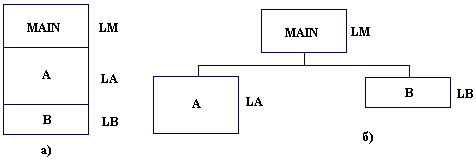

|
|
|
|
Оверлей
Как отмечалось в гл.9, максимальный размер модуля не может превышать 64 Кбайта, однако количество модулей не ограничено, что дает возможность разрабатывать весьма крупные программы, занимающие, например, всю доступную оперативную память ПК (приблизительно 580 Кбайт). Тем не менее, в некоторых случаях и этот объем может оказаться недостаточным. Турбо Паскаль предоставляет в распоряжение программиста простой и достаточно эффективный механизм оверлея, с помощью которого можно создавать программы практически неограниченной длины (следует оговориться, что речь идет только о длине кода программы; два важных размера -длина сегмента данных и размер программного стека - в Турбо Паскале не могут превышать 64 Кбайта независимо от структуры программы).
Оверлей - это такой способ использования оперативной памяти, при котором в один и тот же участок памяти, называемый оверлейным буфером, попеременно по мере надобности загружаются различные оверлейные (перекрывающиеся) модули. При этом все оверлейные модули в готовом к работе виде хранятся на диске, а в оперативной памяти в каждый момент находится лишь один активный модуль и, возможно, небольшое число неактивных.
Пусть, например, программа (рис. 11.1) состоит из главной части MAIN и двух модулей А к В, a LM, LA и LB - соответственно длина главной части и обоих модулей, причем LA > LB. Тогда неоверлейная программа займет в памяти LM + LA + LB байт, в то время как- оверлейная программа - лишь LM + LA байт.
При исполнении оверлейной программы в память первоначально загружается главная часть и один из модулей, например, модуль А. Если в процессе исполнения программы встретится обращение к модулю В, программа приостановит свою работу, с диска в оверлейный буфер будет загружен модуль В (модуль А при этом частично уничтожается), после чего программа продолжит свою работу. Если в дальнейшем встретится обращение к А, точно таким же образом будет загружен модуль А, причем загрузка нужных модулей в оверлейный буфер осуществляется автоматически и программисту не нужно об этом заботиться.

Puc.11.1. Пример структуры программы: а) неоверлейная; 6) оверлейная
Описанный механизм выявляет главное преимущество оверлейной структуры: объем оперативной памяти, занимаемой оверлейной программой, определяется длиной ее главной части и наибольшего из перекрывающихся модулей, в то время как при неоверлейной структуре в этот объем входит суммарная длина всех модулей. Чем больше в программе оверлейных модулей и чем меньше длина наибольшего из них, тем больший выигрыш в памяти дает оверлейная структура. Однако совершенно очевиден и главный недостаток таких структур: на каждую-загрузку оверлейного модуля с диска в оверлейный буфер требуется дополнительное время, поэтому оверлейная программа будет исполняться с меньшей скоростью.
Работа оверлейных программ обеспечивается с помощью процедур и функций библиотечного модуля OVERLAY, входящего в библиотечный файл TURBO.TPL.
При создании оверлейных программ нужно руководствоваться следующей последовательностью действий.
Program Main;
Uses CRT, DOS,Graph, Overlay, UnitA, UnitB;
{$0 DOS}
{$0 UnitA}
{$O UnitB}
Следует подчеркнуть, что из всех стандартных библиотечных модулей только один модуль DOS может быть оверлейным, остальные модули (CRT, Graph, Printer и т.д.) не могут объявляться оверлейными.
Таким образом, все процедуры и функции в оверлейной программе должны использовать дальнюю модель вызова - это обязательное условие. Отметим, что попытка компиляции оверлейного модуля, в начале которого отсутствует директива {$О+} предполагается, что опция среды OPTIONS/COMPILE/OVERLAY ALLOWED неактивна), будет обнаружена компилятором, в то время как! неправильная (ближняя) модель вызова оверлейных подпрограмм компилятором не контролируется и может привести к непредсказуемым результатам при исполнении программы.
Далее, инициация оверлея (осуществляется вызовом процедуры OVRINIT, см. ниже) должна происходить до вызова любого из оверлейных модулей. Это требование кажется тривиальным, однако множество проблем в оверлейных программах обычно :вязано именно с ним. Дело в том, что обращение к оверлейному модулю может происходить еще до начала работы основной программы: напомню, что любой модуль (в том числе и оверлейный) может иметь инициирующую часть, которая исполняется перед началом работы основной программы. В связи с этим рекомендую придерживаться следующего простого правила: никогда не используйте оператор BEGIN в конце модуля, если Вам нет нужды в инициирующих действиях; пустая инициирующая часть содержит пустой оператор, которому будет передано управление на этапе инициации. Таким образом, пустая инициирующая часть оверлейного модуля очень часто может вызывать сообщение об ошибке периода исполнения с кодом 208 (не установлена система управления оверлеем). Как же быть, если в оверлейном модуле все-таки нужна инициирующая часть? В этом случае можно рекомендовать следующий прием. Создайте лишний модуль, в котором будут пустыми все части, кроме инициирующей. В этой части разместите команды инициации оверлея. Новый модуль не должен быть оверлейным и его имя должно стоять в предложении USES основной программы перед именем любого оверлейного модуля. После компиляции такой программы инициация оверлея будет осуществляться перед выполнением любой другой инициирующей части и проблема будет решена.
Процедура OVRINIT.
Инициализирует оверлейный файл. Обращение:
OVRINIT (<имя>)
Здесь <имя> - выражение типа STRING; имя файла с оверлейной частью программы.
При компиляции оверлейной программы создается специальный файл с именем, совпадающим с именем главной программы, и расширением .OVR. В этот файл компилятор помещает все оверлейные модули, из него же эти модули загружаются в оверлейный буфер в процессе исполнения программы. Файл с оверлейной частью программы должен размещаться в том же каталоге, что и файл с главной частью (с расширением .ЕХЕ). Отметим, что имя оверлейного файла необходимо дополнять расширением .OVR.
Обычно размер оверлейного буфера определяется автоматически таким образом, чтобы в нем мог разместиться самый крупный из всех оверлейных модулей. Программист может увеличить размер буфера. Тогда при загрузке в буфер очередного модуля программа проверит, достаточно ли в буфере свободного места и, если достаточно, загрузит новый модуль сразу за старым, который, таким образом, не будет уничтожен. Такой механизм способствует минимизации потерь времени на перезагрузку модулей. Если установлен очень большой размер буфера, то в нем, возможно, смогут разместиться все оверлейные модули, однако в этом случае оверлейная структура становится просто ненужной.
Процедура OVRSETBUF.
Устанавливает размер оверлейного буфера. Формат обращения:
OVRSETBUF (<длина>)
Здесь <длина> - выражение типа LONGINT задает новую длину буфера в байтах не больше той, которую устанавливает сама система автоматически. Расширение буфера идет за счет соответствующего уменьшения доступной динамической памяти, поэтому к моменту вызова этой процедуры куча должна быть пустой.
Функция OVRGETBUF.
Возвращает значение типа LONGINT, содержащее текущий размер оверлейного буфера. Обращение:
OVRGETBUF
Процедура OVRINITEMS.
Обеспечивает использование расширенной памяти. Если Ваш ПК относится к классу компьютеров типа IBM PC/AT и в нем имеется так называемая EMS-памятъ (Expanded Memory Specification - расширенная1 память, удовлетворяющая стандарту фирм Lotus/Intel/Microsoff). Вы можете использовать эту память для размещения в ней оверлейного файла .OVR. Поскольку время доступа к расширенной памяти значительно меньше времени чтения с диска, такое размещение увеличивает скорость исполнения оверлейной программы. Обращение:
OVRINITEMS
При обращении к этой процедуре программа прежде всего проверит, достаточен ли объем имеющейся в Вашем ПК EMS-памяти для размещения оверлейного файла. Если это так, то оверлейный файл считывается в EMS-память, сам файл закрывается, и программа будет получать оверлейные модули из этой памяти. Если же ЕMS-память отсутствует или ее объем недостаточен, обращение к процедуре игнорируется, и программа будет считывать оверлейные модули с диска.
Все управление оверлеем осуществляется стандартной подпрограммой, которая называется администратором оверлея. Эта подпрограмма получает управление всякий раз, когда программа обращается к ресурсам оверлейного модуля, не размещенного в данный момент в буфере. Администратор оверлея сначала перемещает предыдущий оверлейный модуль из буфера в так называемую контрольную зону, а уже затем грузит с диска в буфер новый модуль. Если в момент, когда оверлей находится в контрольной зоне, программа вновь обратится к нему, он вернется на свое старое место и таким образом затраты времени на обмен данными с диском будут уменьшены. Программист может задать размер контрольной зоны с помощью обращения к процедуре OVRSETRETRY и получить этот размер с помощью функции OVRGETRETRY. Обычно размер контрольной зоны составляет от одной трети до половины размера оверлейного буфера. Вы можете подобрать этот размер экспериментально в ходе пробного прогона программы. Для этого используются две переменные модуля OVERLAY:
var
OvrTrapCount: Word;{Счетчик обращений ,к администратору}
OvrLoadCount: Word;{Счетчик загрузок в оверлейный буфер}
Всякое обращение программы к оверлейному модулю, которого нет в оверлейном буфере (в том числе и к модулю, находящемуся в контрольной зоне), приводит к наращиванию содержимого переменной OVRTRAPCOUNT на единицу. Всякая загрузка оверлейного модуля из файла в буфер увеличивает на единицу счетчик OVRLOADCOUNT.
В интерфейсной части модуля ОVERLAY объявлены еще три переменные, которые могут оказаться полезными для некоторых применений.
type
vrReadFunc = Function (OvrSeg: Word): Integer;
var
vrReadBuf : OvrReadFunc;{Функция чтения из оверлейного файла}
vrResult :Integer;{Признак ошибки оверлея}
vrFileMode:Byte;{Способ доступа к оверлейному файлу}
Переменная OVRRESULT содержит код, указывающий на успех или неуспех каждой очередной операции администратора оверлея. Значения этой переменной могут быть такими:.
0 - операция прошла успешно;
-1 - общая ошибка;
-2 - не найден оверлейный файл;
-3 - не хватает памяти для оверлейного буфера;
-4 - ошибка чтения-записи оверлейного файла;
-5 - не работает драйвер EMS-памяти;
-6 - не хватает EMS-памяти.
Переменная OVRFILEMODE обычно содержит 0, что трактуется как возможность доступа к оверлейному файлу только для чтения информации. Перед вызовом процедуры OVRINIT программа может установить другое значение этой переменной и таким образом изменить доступ к файлу, что бывает необходимым, если ПК подключен к сети ЭВМ.
В переменной OVRREADBUF содержится имя функции, к которой обращается администратор оверлея при каждом чтении из оверлейного файла. Программа может перехватить обращение к этой функции и проанализировать результат операции. Для этого необходимо в основной программе сохранить имя стандартной функции чтения в глобальной переменной типа OVRREADFUNC и поместить в переменную OVRREADBUF имя новой функции. В эту новую функцию администратор будет передавать управление всякий раз, когда появится необходимость чтения из оверлейного файла. Программа может проверить состояние дисков перед исполнением операции (например, наличие нужного сменного диска), выполнить саму операцию (путем вызова функции, сохраненной в глобальной переменной), проверить результат обращения и предпринять необходимые действия. Отметим, что нормальное завершение операции чтения указывается нулевым значением функции чтения, ненулевое значение означает ту или иную ошибку; код ошибки стандартен для ДОС (см. прил.3) и/или для драйвера EMS-памяти.
При желании Вы можете пристыковать оверлейный файл в конец EXE-файла основной программы. При этом следует учесть, что интегрированная среда пристыковывает в конец EXE-файла отладочные таблицы, поэтому программу и все ее модули следует компилировать в режиме отключенных опций OPTIONS /COMPILER/DEBUG INFORMATION и OPTIONS/COMPILER/LOCAL SYMBOLS (см.прилЛ.2.8). Для объединения EXE-файла с оверлейным файлом необходимо дать такую команду ДОС:
СОРY /В NAME.EXE+NAME.OVR
Здесь NAME.EXE - имя EXE-файла, NAME.OVR - имя оверлейного файла. Чтобы оверлеи читались из ЕXE-файла, нужно просто указать имя этого файла при обращении к OVRINIT:
Ovrlnit(ParamStr(0));
(в программу всегда передается параметр ParamStr(0), в котором ДОС сообщает полное имя запущенной программы - с указанием диска и каталога, откуда была загружена программа).
|
|
|
|